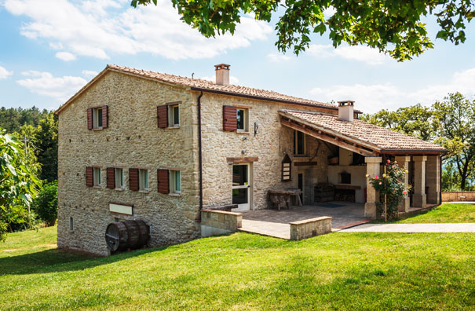

Casa Rural de Campo Dane
Casa Rural de Campo Dane es un acogedor alojamiento rural situado en una tranquila zona de Valdemanco, un bonito pueblo de la Sierra Norte de Madrid. Esta casa tiene capacidad para alojar cómodamente a 6-8 personas gracias a sus equipadas estancias interiores y a su espacio exterior privado
| Información de la casa | |||||
|---|---|---|---|---|---|
| Caracteristicas | Plazas | Dormitorios | Camas | Baños | Chimenea |
| 12 | 6 | 3 | 3 | Si | |
| Actividades | Caza, pesca, senderismo, equitación | ||||